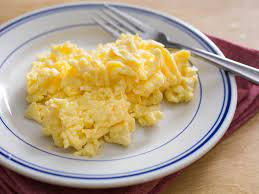

scrambled eggs

ingredients:
- 4 large eggs
- 1/4 cups milk
- salt and pepper to taste
- 1 tablespoon of ether butter or cooking oil
instructions:
- Crack the eggs into a bowl and whisk them until the yolks and whites are well combined. If desired, whisk in the milk or heavy cream for extra creaminess. Season the mixture with salt and pepper according to your taste.
- Heat a non-stick skillet or frying pan over medium-low heat. Add the butter or oil and let it melt and coat the bottom of the pan evenly.
- Pour the whisked eggs into the pan and let them cook undisturbed for a minute or so until the edges start to set.
- Using a spatula, gently push the cooked edges towards the center of the pan, allowing the uncooked eggs to flow to the edges. Continue this process, gently stirring and folding the eggs, until they are mostly cooked but still slightly runny.
- Remove the pan from the heat while the eggs are still slightly undercooked. The residual heat will continue to cook them to perfection without overcooking.
- Let the eggs sit in the pan for a moment to finish cooking through. They should be soft, creamy, and slightly moist.
- Transfer the scrambled eggs to a serving plate and Serve